<DOCUMENT>
<TYPE>EX-99.2
<SEQUENCE>3
<FILENAME>d318835dex992.htm
<DESCRIPTION>EX-99.2
<TEXT>
<HTML><HEAD>
<TITLE>EX-99.2</TITLE>
</HEAD>
 <BODY BGCOLOR="WHITE">

<Center><DIV STYLE="width:8.5in" align="left">
 <P STYLE="margin-top:0pt; margin-bottom:0pt; font-size:10pt; font-family:Times New Roman" ALIGN="right"><B>Exhibit 99.2 </B></P> <P STYLE="font-size:12pt;margin-top:0pt;margin-bottom:0pt">&nbsp;</P>
<P STYLE="margin-top:0pt;margin-bottom:0pt" ALIGN="center">


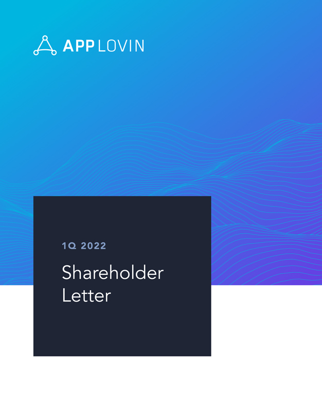
 </P> <P STYLE="font-family:Times New Roman; font-size:0.5pt"><FONT COLOR="#FFFFFF">APP lovin1Q 2022 Shareholder Letter1 </FONT></P>
</DIV></Center>


<p style="margin-top:1em; margin-bottom:0em; page-break-before:always">
<HR SIZE="3" style="COLOR:#999999" WIDTH="100%" ALIGN="CENTER">

<Center><DIV STYLE="width:8.5in" align="left">
 <P STYLE="margin-top:0pt;margin-bottom:0pt" ALIGN="center">


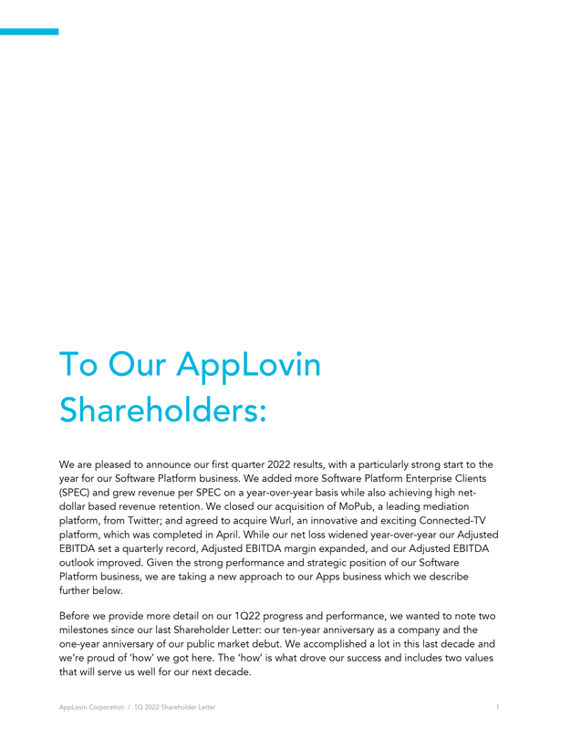
 </P> <P STYLE="font-family:Times New Roman; font-size:0.5pt"><FONT COLOR="#FFFFFF">To Our AppLovin Shareholders: We are pleased to announce our first quarter 2022 results, with a particularly strong start to the year
for our Software Platform business. We added more Software Platform Enterprise Clients (SPEC) and grew revenue per SPEC on a year-over-year basis while also achieving high <FONT STYLE="white-space:nowrap">net-dollar</FONT> based revenue retention.
We closed our acquisition of MoPub, a leading mediation platform, from Twitter; and agreed to acquire Wurl, an innovative and exciting <FONT STYLE="white-space:nowrap">Connected-TV</FONT> platform, which was completed in April. While our net loss
widened year-over-year our Adjusted EBITDA set a quarterly record, Adjusted EBITDA margin expanded, and our Adjusted EBITDA outlook improved. Given the strong performance and strategic position of our Software Platform business, we are taking a new
approach to our Apps business which we describe further below. Before we provide more detail on our 1Q22 progress and performance, we wanted to note two milestones since our last Shareholder Letter: our
<FONT STYLE="white-space:nowrap">ten-year</FONT> anniversary as a company and the <FONT STYLE="white-space:nowrap">one-year</FONT> anniversary of our public market debut. We accomplished a lot in this last decade and we&#146;re proud of
&#145;how&#146; we got here. The &#145;how&#146; is what drove our success and includes two values that will serve us well for our next decade. AppLovin Corporation / 1Q 2022 Shareholder
Letter&nbsp;&nbsp;&nbsp;&nbsp;&nbsp;&nbsp;&nbsp;&nbsp;&nbsp;&nbsp;&nbsp;&nbsp;&nbsp;&nbsp;&nbsp;&nbsp;2 </FONT></P>
</DIV></Center>


<p style="margin-top:1em; margin-bottom:0em; page-break-before:always">
<HR SIZE="3" style="COLOR:#999999" WIDTH="100%" ALIGN="CENTER">

<Center><DIV STYLE="width:8.5in" align="left">
 <P STYLE="margin-top:0pt;margin-bottom:0pt" ALIGN="center">


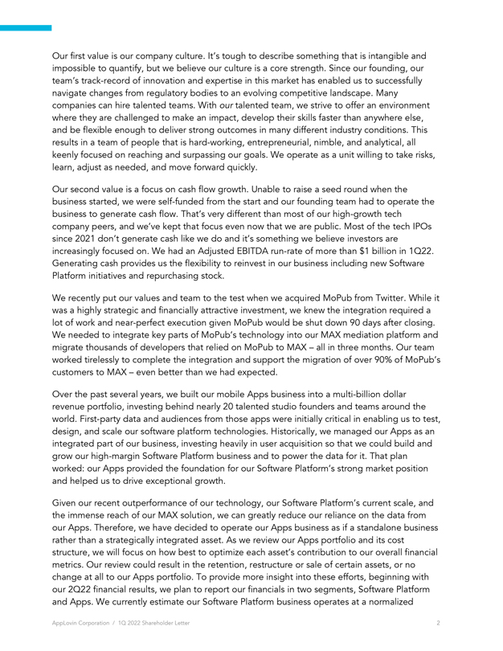
 </P> <P STYLE="font-family:Times New Roman; font-size:0.5pt"><FONT COLOR="#FFFFFF">Our first value is our company culture. It&#146;s tough to describe something that is intangible and impossible to quantify, but we
believe our culture is a core strength. Since our founding, our team&#146;s track-record of innovation and expertise in this market has enabled us to successfully navigate changes from regulatory bodies to an evolving competitive landscape. Many
companies can hire talented teams. With our talented team, we strive to offer an environment where they are challenged to make an impact, develop their skills faster than anywhere else, and be flexible enough to deliver strong outcomes in many
different industry conditions. This results in a team of people that is hard-working, entrepreneurial, nimble, and analytical, all keenly focused on reaching and surpassing our goals. We operate as a unit willing to take risks, learn, adjust as
needed, and move forward quickly. Our second value is a focus on cash flow growth. Unable to raise a seed round when the business started, we were self-funded from the start and our founding team had to operate the business to generate cash flow.
That&#146;s very different than most of our high-growth tech company peers, and we&#146;ve kept that focus even now that we are public. Most of the tech IPOs since 2021 don&#146;t generate cash like we do and it&#146;s something we believe investors
are increasingly focused on. We had an Adjusted EBITDA <FONT STYLE="white-space:nowrap">run-rate</FONT> of more than $1&nbsp;billion in 1Q22. Generating cash provides us the flexibility to reinvest in our business including new Software Platform
initiatives and repurchasing stock. We recently put our values and team to the test when we acquired MoPub from Twitter. While it was a highly strategic and financially attractive investment, we knew the integration required a lot of work and
near-perfect execution given MoPub would be shut down 90 days after closing. We needed to integrate key parts of MoPub&#146;s technology into our MAX mediation platform and migrate thousands of developers that relied on MoPub to MAX &#150; all in
three months. Our team worked tirelessly to complete the integration and support the migration of over 90% of MoPub&#146;s customers to MAX &#150; even better than we had expected. Over the past several years, we built our mobile Apps business into
a multi-billion dollar revenue portfolio, investing behind nearly 20 talented studio founders and teams around the world. First-party data and audiences from those apps were initially critical in enabling us to test, design, and scale our software
platform technologies. Historically, we managed our Apps as an integrated part of our business, investing heavily in user acquisition so that we could build and grow our high-margin Software Platform business and to power the data for it. That plan
worked: our Apps provided the foundation for our Software Platform&#146;s strong market position and helped us to drive exceptional growth. Given our recent outperformance of our technology, our Software Platform&#146;s current scale, and the
immense reach of our MAX solution, we can greatly reduce our reliance on the data from our Apps. Therefore, we have decided to operate our Apps business as if a standalone business rather than a strategically integrated asset. As we review our Apps
portfolio and its cost structure, we will focus on how best to optimize each asset&#146;s contribution to our overall financial metrics. Our review could result in the retention, restructure or sale of certain assets, or no change at all to our Apps
portfolio. To provide more insight into these efforts, beginning with our 2Q22 financial results, we plan to report our financials in two segments, Software Platform and Apps. We currently estimate our Software Platform business operates at a
normalized AppLovin Corporation / 1Q 2022 Shareholder Letter&nbsp;&nbsp;&nbsp;&nbsp;&nbsp;&nbsp;&nbsp;&nbsp;&nbsp;&nbsp;&nbsp;&nbsp;&nbsp;&nbsp;&nbsp;&nbsp; 2 3 </FONT></P>
</DIV></Center>


<p style="margin-top:1em; margin-bottom:0em; page-break-before:always">
<HR SIZE="3" style="COLOR:#999999" WIDTH="100%" ALIGN="CENTER">

<Center><DIV STYLE="width:8.5in" align="left">
 <P STYLE="margin-top:0pt;margin-bottom:0pt" ALIGN="center">


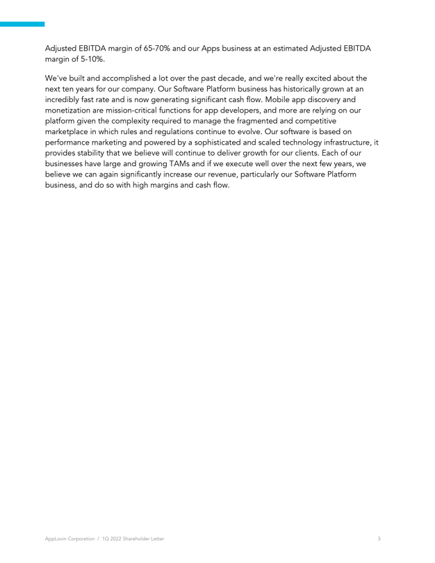
 </P> <P STYLE="font-family:Times New Roman; font-size:0.5pt"><FONT COLOR="#FFFFFF">Adjusted EBITDA margin of <FONT STYLE="white-space:nowrap">65-70%</FONT> and our Apps business at an estimated Adjusted EBITDA margin of
<FONT STYLE="white-space:nowrap">5-10%.</FONT> We&#146;ve built and accomplished a lot over the past decade, and we&#146;re really excited about the next ten years for our company. Our Software Platform business has historically grown at an
incredibly fast rate and is now generating significant cash flow. Mobile app discovery and monetization are mission-critical functions for app developers, and more are relying on our platform given the complexity required to manage the fragmented
and competitive marketplace in which rules and regulations continue to evolve. Our software is based on performance marketing and powered by a sophisticated and scaled technology infrastructure, it provides stability that we believe will continue to
deliver growth for our clients. Each of our businesses have large and growing TAMs and if we execute well over the next few years, we believe we can again significantly increase our revenue, particularly our Software Platform business, and do so
with high margins and cash flow. AppLovin Corporation / 1Q 2022 Shareholder Letter 4 </FONT></P>
</DIV></Center>


<p style="margin-top:1em; margin-bottom:0em; page-break-before:always">
<HR SIZE="3" style="COLOR:#999999" WIDTH="100%" ALIGN="CENTER">

<Center><DIV STYLE="width:8.5in" align="left">
 <P STYLE="margin-top:0pt;margin-bottom:0pt" ALIGN="center">


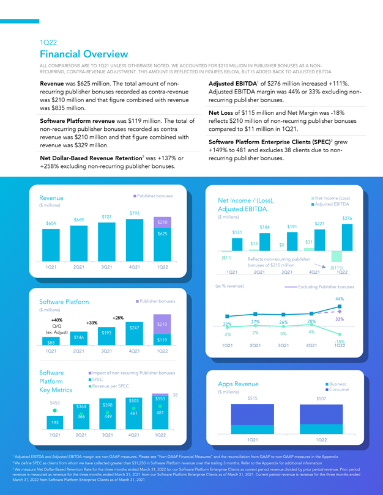
 </P> <P STYLE="font-family:Times New Roman; font-size:0.5pt"><FONT COLOR="#FFFFFF">1Q22&nbsp;&nbsp;&nbsp;&nbsp;&nbsp;&nbsp;&nbsp;&nbsp;&nbsp;&nbsp;&nbsp;&nbsp;&nbsp;&nbsp;&nbsp;&nbsp;Financial
Overview&nbsp;&nbsp;&nbsp;&nbsp;&nbsp;&nbsp;&nbsp;&nbsp;&nbsp;&nbsp;&nbsp;&nbsp;&nbsp;&nbsp;&nbsp;&nbsp;ALL COMPARISONS ARE TO 1Q21 UNLESS OTHERWISE NOTED. WE ACCOUNTED FOR $210 MILLION IN PUBLISHER BONUSES AS A
<FONT STYLE="white-space:nowrap">NON-RECURRING,</FONT> CONTRA-REVENUE ADJUSTMENT. THIS AMOUNT IS REFLECTED IN FIGURES BELOW, BUT IS ADDED BACK TO ADJUSTED EBITDARevenue was $625&nbsp;million. The total amount of
<FONT STYLE="white-space:nowrap">non-&nbsp;&nbsp;&nbsp;&nbsp;&nbsp;&nbsp;&nbsp;&nbsp;&nbsp;&nbsp;&nbsp;&nbsp;&nbsp;&nbsp;&nbsp;&nbsp;Adjusted</FONT> EBITDA(1)of $276&nbsp;million increased +111%.recurring publisher bonuses recorded as
contra-revenue&nbsp;&nbsp;&nbsp;&nbsp;Adjusted EBITDA margin was 44% or 33% excluding <FONT STYLE="white-space:nowrap">non-was</FONT> $210&nbsp;million and that figure combined with revenue&nbsp;&nbsp;&nbsp;&nbsp;recurring publisher bonuses.was
$835&nbsp;million.&nbsp;&nbsp;&nbsp;&nbsp;&nbsp;&nbsp;&nbsp;&nbsp;&nbsp;&nbsp;&nbsp;&nbsp;&nbsp;&nbsp;&nbsp;&nbsp;Net Loss of $115&nbsp;million and Net Margin was <FONT STYLE="white-space:nowrap">-18%Software</FONT> Platform revenue was
$119&nbsp;million. The total of reflects $210&nbsp;million of <FONT STYLE="white-space:nowrap">non-recurring</FONT> publisher bonusesnon-recurring publisher bonuses recorded as
contra&nbsp;&nbsp;&nbsp;&nbsp;&nbsp;&nbsp;&nbsp;&nbsp;&nbsp;&nbsp;&nbsp;&nbsp;&nbsp;&nbsp;&nbsp;&nbsp;compared to $11&nbsp;million in 1Q21.revenue was $210&nbsp;million and that figure combined with&nbsp;&nbsp;&nbsp;&nbsp;revenue was
$329&nbsp;million.&nbsp;&nbsp;&nbsp;&nbsp;&nbsp;&nbsp;&nbsp;&nbsp;&nbsp;&nbsp;&nbsp;&nbsp;&nbsp;&nbsp;&nbsp;&nbsp; Software Platform Enterprise Clients
(SPEC)(3)grew&nbsp;&nbsp;&nbsp;&nbsp;&nbsp;&nbsp;&nbsp;&nbsp;&nbsp;&nbsp;&nbsp;&nbsp;&nbsp;&nbsp;&nbsp;&nbsp;+149% to 481 and excludes 38 clients due to <FONT STYLE="white-space:nowrap">non-Net</FONT> Dollar-Based Revenue Retention(2)was +137%
or&nbsp;&nbsp;&nbsp;&nbsp;&nbsp;&nbsp;&nbsp;&nbsp;&nbsp;&nbsp;&nbsp;&nbsp;&nbsp;&nbsp;&nbsp;&nbsp;recurring publisher bonuses.+258% excluding <FONT STYLE="white-space:nowrap">non-recurring</FONT> publisher
bonuses.&nbsp;&nbsp;&nbsp;&nbsp;&nbsp;&nbsp;&nbsp;&nbsp;&nbsp;&nbsp;&nbsp;&nbsp;&nbsp;&nbsp;&nbsp;&nbsp;RevenuePublisher bonusesNet Income / (Loss),Net Income (Loss)($ millions)Adjusted EBITDAAdjusted EBITDA$793$669$727($
millions)$276$604$210$221$184$191$625$131$14$0$31($11)Reflects <FONT STYLE="white-space:nowrap">non-recurring</FONT> publisher1Q212Q213Q214Q211Q22bonuses of $210 million($115)1Q212Q213Q214Q211Q22(as % revenue)Excluding Publisher bonusesSoftware
PlatformPublisher bonuses&nbsp;&nbsp;&nbsp;&nbsp;44%($ millions)+40%+28%27%26%28%33%+33%$21022%Q/Q$247(ex.
<FONT STYLE="white-space:nowrap"><FONT STYLE="white-space:nowrap">Adjust)$193-2%2%0%4%$146$119$88-18%1Q212Q213Q214Q211Q221Q212Q213Q214Q211Q22SoftwareImpact</FONT></FONT> of <FONT STYLE="white-space:nowrap">non-recurring</FONT> Publisher
bonusesPlatformRevenue SPEC per SPECApps RevenueBusinessKey Metrics($ millions)Consumer38$503$553$515$507$453$364$3983664494614811931Q212Q213Q214Q211Q221Q211Q221 Adjusted EBITDA and Adjusted EBITDA margin are
<FONT STYLE="white-space:nowrap">non-GAAP</FONT> measures. Please see <FONT STYLE="white-space:nowrap">&#147;Non-GAAP</FONT> Financial Measures&#148; and the reconciliation from GAAP to <FONT STYLE="white-space:nowrap">non-GAAP</FONT> measures in
the Appendix 2 We define SPEC as clients from whom we have collected greater than $31,250 in Software Platform revenue over the trailing 3 months. Refer to the Appendix for additional information 3 We measure Net Dollar-Based Retention Rate for the
three months ended March&nbsp;31, 2022 for our Software Platform Enterprise Clients as current period revenue divided by prior period revenue. Prior period revenue is measured AppLo as revenue i Corpora for the ion three / months 1Q 2022 ended
Shareholder March&nbsp;31, 2021 Letter from our Software Platform Enterprise Clients&nbsp;&nbsp;&nbsp;&nbsp;as of March&nbsp;31, 2021. Current period revenue is revenue for the three months ended March&nbsp;31, 2022
from&nbsp;&nbsp;&nbsp;&nbsp;Software Platform Enterprise Clients as of March&nbsp;31, 2021 5 </FONT></P>
</DIV></Center>


<p style="margin-top:1em; margin-bottom:0em; page-break-before:always">
<HR SIZE="3" style="COLOR:#999999" WIDTH="100%" ALIGN="CENTER">

<Center><DIV STYLE="width:8.5in" align="left">
 <P STYLE="margin-top:0pt;margin-bottom:0pt" ALIGN="center">


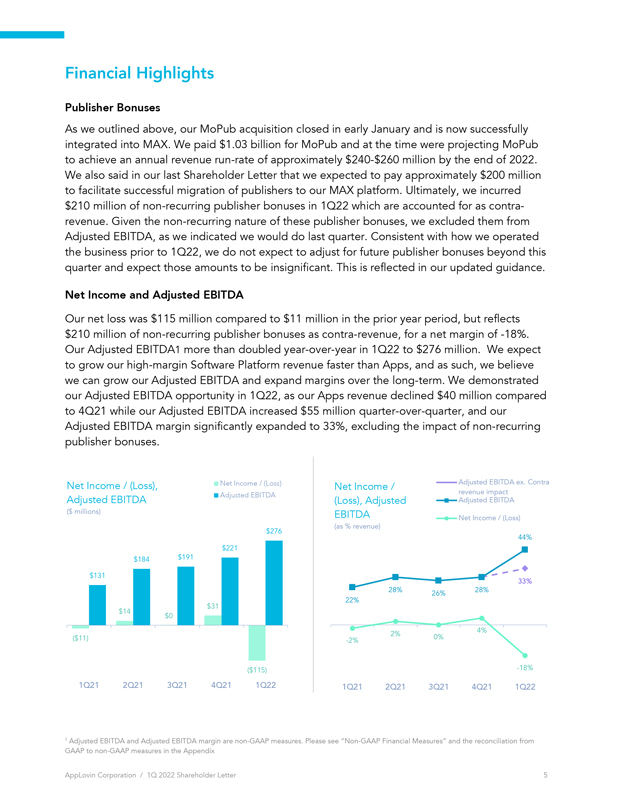
 </P> <P STYLE="font-family:Times New Roman; font-size:0.5pt"><FONT COLOR="#FFFFFF">Financial Highlights Publisher Bonuses As we outlined above, our MoPub acquisition closed in early January and is now successfully
integrated into MAX. We paid $1.03&nbsp;billion for MoPub and at the time were projecting MoPub to achieve an annual revenue <FONT STYLE="white-space:nowrap">run-rate</FONT> of approximately
<FONT STYLE="white-space:nowrap">$240-$260&nbsp;million</FONT> by the end of 2022. We also said in our last Shareholder Letter that we expected to pay approximately $200&nbsp;million to facilitate successful migration of publishers to our MAX
platform. Ultimately, we incurred $210&nbsp;million of <FONT STYLE="white-space:nowrap">non-recurring</FONT> publisher bonuses in 1Q22 which are accounted for as contra-revenue. Given the <FONT STYLE="white-space:nowrap">non-recurring</FONT> nature
of these publisher bonuses, we excluded them from Adjusted EBITDA, as we indicated we would do last quarter. Consistent with how we operated the business prior to 1Q22, we do not expect to adjust for future publisher bonuses beyond this quarter and
expect those amounts to be insignificant. This is reflected in our updated guidance. Net Income and Adjusted EBITDA Our net loss was $115&nbsp;million compared to $11&nbsp;million in the prior year period, but reflects $210&nbsp;million of <FONT
STYLE="white-space:nowrap">non-recurring</FONT> publisher bonuses as contra-revenue, for a net margin of <FONT STYLE="white-space:nowrap">-18%.</FONT> Our Adjusted EBITDA1 more than doubled year-over-year in 1Q22 to $276&nbsp;million. We expect to
grow our high-margin Software Platform revenue faster than Apps, and as such, we believe we can grow our Adjusted EBITDA and expand margins over the long-term. We demonstrated our Adjusted EBITDA opportunity in 1Q22, as our Apps revenue declined
$40&nbsp;million compared to 4Q21 while our Adjusted EBITDA increased $55&nbsp;million quarter-over-quarter, and our Adjusted EBITDA margin significantly expanded to 33%, excluding the impact of <FONT STYLE="white-space:nowrap">non-recurring</FONT>
publisher bonuses. Net Income / (Loss),Net Income / (Loss)Net Income /Adjusted EBITDA ex. ContraAdjusted EBITDAAdjusted EBITDA(Loss), AdjustedAdjusted revenue impact EBITDA($ millions)EBITDANet Income / (Loss)$276(as %
revenue)44%$221$184$191$13133%28%26%28% <FONT STYLE="white-space:nowrap">22%$31$14$02%4%($11)-2%</FONT> <FONT STYLE="white-space:nowrap">0%($115)-18%</FONT> 1Q212Q213 Q214Q211Q221Q212Q213Q214Q211Q221 Adjusted EBITDA and Adjusted EBITDA margin are <FONT
STYLE="white-space:nowrap">non-GAAP</FONT> measures. Please see <FONT STYLE="white-space:nowrap">&#147;Non-GAAP</FONT> Financial Measures&#148; and the reconciliation fromGAAP to <FONT STYLE="white-space:nowrap">non-GAAP</FONT> measures in the
AppendixAppLovin Corporation / 1Q 2022 Shareholder Letter56 </FONT></P>
</DIV></Center>


<p style="margin-top:1em; margin-bottom:0em; page-break-before:always">
<HR SIZE="3" style="COLOR:#999999" WIDTH="100%" ALIGN="CENTER">

<Center><DIV STYLE="width:8.5in" align="left">
 <P STYLE="margin-top:0pt;margin-bottom:0pt" ALIGN="center">


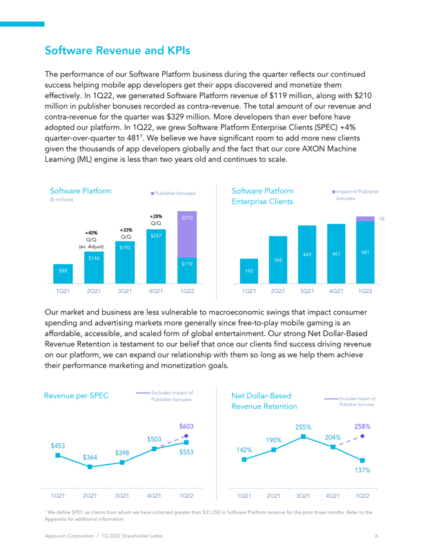
 </P> <P STYLE="font-family:Times New Roman; font-size:0.5pt"><FONT COLOR="#FFFFFF">Software Revenue and KPIs The performance of our Software Platform business during the quarter reflects our continued success helping
mobile app developers get their apps discovered and monetize them effectively. In 1Q22, we generated Software Platform revenue of $119&nbsp;million, along with $210&nbsp;million in publisher bonuses recorded as contra-revenue. The total amount of
our revenue and contra-revenue for the quarter was $329&nbsp;million. More developers than ever before have adopted our platform. In 1Q22, we grew Software Platform Enterprise Clients (SPEC) +4% quarter-over-quarter to 4811. We believe we have
significant room to add more new clients given the thousands of app developers globally and the fact that our core AXON Machine Learning (ML)&nbsp;engine is less than two years old and continues to scale. Software PlatformPublisher bonusesSoftware
PlatformImpact of Publisher($ millions)Enterprise Clientsbonuses+28%$21038Q/Q+33%+40%Q/Q$247Q/Q(ex. Adjust)$193449461481$146366$119$881931Q212Q213Q214Q211Q221Q212Q213Q214Q211Q22Our market and business are less vulnerable to macroeconomic swings that
impact consumer spending and advertising markets more generally since <FONT STYLE="white-space:nowrap"><FONT STYLE="white-space:nowrap">free-to-play</FONT></FONT> mobile gaming is an affordable, accessible, and scaled form of global entertainment.
Our strong Net Dollar-Based Revenue Retention is testament to our belief that once our clients find success driving revenue on our platform, we can expand our relationship with them so long as we help them achieve their performance marketing and
monetization goals. Revenue per SPECExcludes impact ofNet Dollar-BasedPublisher bonusesExcludes Impact ofRevenue RetentionPublisher bonuses$603255%258%$503190%204%$453$364$398$553142%137%1Q212Q213Q214Q211Q221Q212Q213Q214Q211Q221 We define SPEC as
clients from whom we have collected greater than $31,250 in Software Platform revenue for the prior three months. Refer to theAppendix for additional informationAppLovin Corporation / 1Q 2022 Shareholder Letter67 </FONT></P>
</DIV></Center>


<p style="margin-top:1em; margin-bottom:0em; page-break-before:always">
<HR SIZE="3" style="COLOR:#999999" WIDTH="100%" ALIGN="CENTER">

<Center><DIV STYLE="width:8.5in" align="left">
 <P STYLE="margin-top:0pt;margin-bottom:0pt" ALIGN="center">


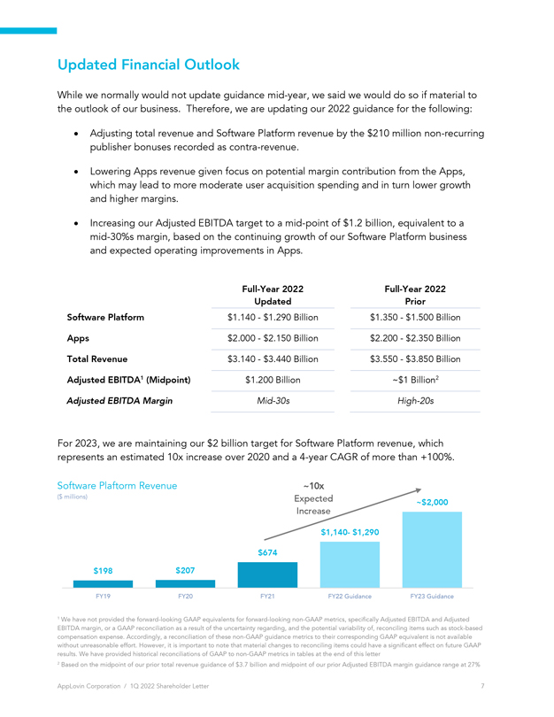
 </P> <P STYLE="font-family:Times New Roman; font-size:0.5pt"><FONT COLOR="#FFFFFF">Updated Financial Outlook While we normally would not update guidance mid year, we said we would do so if material to the outlook of our
business. Therefore, we are updating our 2022 guidance for the following: Adjusting total revenue and Software Platform revenue by the $210 million non recurring publisher bonuses recorded as contra-revenue. Lowering Apps revenue given focus on
potential margin contribution from the Apps, which may lead to more moderate user acquisition spending and in turn lower growth and higher margins. Increasing our Adjusted EBITDA target to a mid point of $1.2 billion, equivalent to a mid 30%s
margin, based on the continuing growth of our Software Platform business and expected operating improvements in Apps. Full-Year 2022Full-Year 2022UpdatedPriorSoftware Platform$1.140 $1.290Billion$1.350 $1.500BillionApps$2.000 $2.150Billion$2.200
$2.350BillionTotal Revenue$3.140 $3.440Billion$3.550 $3.850BillionAdjusted EBITDA1 (Midpoint)$1.200 Billion~$1Billion2Adjusted EBITDA MarginMid-30sHigh-20sFor 2023, we are maintaining our $2 billion target for Software Platform revenue, which
represents an estimated 10x increase over 2020 and a 4 year CAGR of more than +100%. Software Plaftorm Revenue~10x($ millions)Expected~$2,000Increase$1,140 $1,290$674$198$207FY19FY20FY21FY22 GuidanceFY23 Guidance1 We have not provided the
forward-looking GAAP equivalents for forward-looking non GAAP metrics, specifically Adjusted EBITDA and Adjusted EBITDA margin, or a GAAP reconciliation as a result of the uncertainty regarding, and the potential variability of, reconciling items
such as stock-based compensation expense. Accordingly, a reconciliation of these non GAAP guidance metrics to their corresponding GAAP equivalent is not available without unreasonable effort. However, it is important to note that material changes to
reconciling items could have a significant effect on future GAAP results. We have provided historical reconciliations of GAAP to non GAAP metrics in tables at the end of this letter 2 Based on the midpoint of our prior total revenue guidance of $3.7
billion and midpoint of our prior Adjusted EBITDA margin guidance range at 27% AppLovin Corporation / 1Q 2022 Shareholder Letter&nbsp;&nbsp;&nbsp;&nbsp;&nbsp;&nbsp;&nbsp;&nbsp;&nbsp;&nbsp;&nbsp;&nbsp;&nbsp;&nbsp;&nbsp;&nbsp; 7 8 </FONT></P>
</DIV></Center>


<p style="margin-top:1em; margin-bottom:0em; page-break-before:always">
<HR SIZE="3" style="COLOR:#999999" WIDTH="100%" ALIGN="CENTER">

<Center><DIV STYLE="width:8.5in" align="left">
 <P STYLE="margin-top:0pt;margin-bottom:0pt" ALIGN="center">


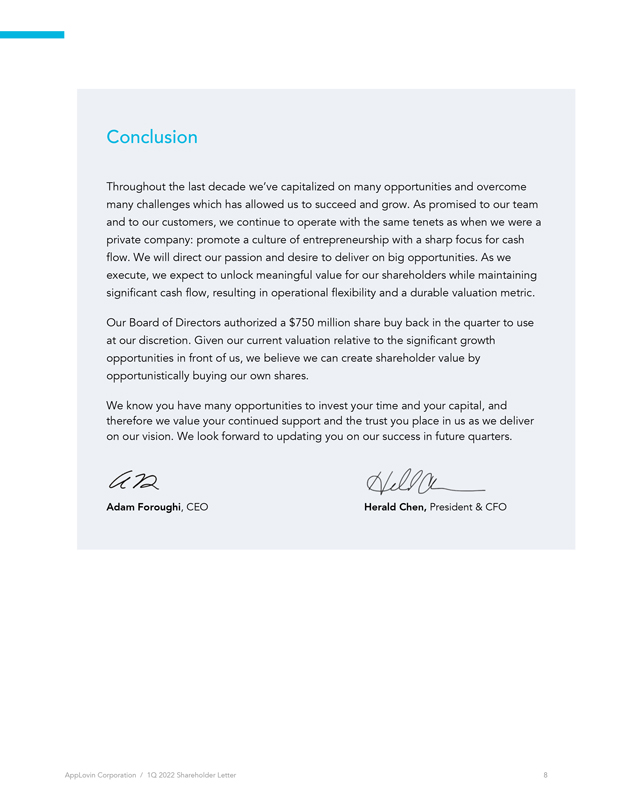
 </P> <P STYLE="font-family:Times New Roman; font-size:0.5pt"><FONT COLOR="#FFFFFF">Conclusion Throughout the last decade we&#146;ve capitalized on many opportunities and overcome many challenges which has allowed us to
succeed and grow. As promised to our team and to our customers, we continue to operate with the same tenets as when we were a private company: promote a culture of entrepreneurship with a sharp focus for cash flow. We will direct our passion and
desire to deliver on big opportunities. As we execute, we expect to unlock meaningful value for our shareholders while maintaining significant cash flow, resulting in operational flexibility and a durable valuation metric. Our Board of Directors
authorized a $750 million share buy back in the quarter to use at our discretion. Given our current valuation relative to the significant growth opportunities in front of us, we believe we can create shareholder value by opportunistically buying our
own shares. We know you have many opportunities to invest your time and your capital, and therefore we value your continued support and the trust you place in us as we deliver on our vision. We look forward to updating you on our success in future
quarters. Adam Foroughi, CEO Herald Chen, President &amp; CFO AppLovin Corporation / 1Q 2022 Shareholder Letter </FONT></P>
</DIV></Center>


<p style="margin-top:1em; margin-bottom:0em; page-break-before:always">
<HR SIZE="3" style="COLOR:#999999" WIDTH="100%" ALIGN="CENTER">

<Center><DIV STYLE="width:8.5in" align="left">
 <P STYLE="margin-top:0pt;margin-bottom:0pt" ALIGN="center">


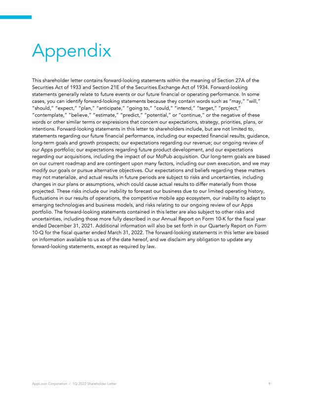
 </P> <P STYLE="font-family:Times New Roman; font-size:0.5pt"><FONT COLOR="#FFFFFF">Appendix This shareholder letter contains forward-looking statements within the meaning of Section&nbsp;27A of the Securities Act of
1933 and Section&nbsp;21E of the Securities Exchange Act of 1934. Forward-looking statements generally relate to future events or our future financial or operating performance. In some cases, you can identify forward-looking statements because they
contain words such as &#147;may,&#148; &#147;will,&#148; &#147;should,&#148; &#147;expect,&#148; &#147;plan,&#148; &#147;anticipate,&#148; &#147;going to,&#148; &#147;could,&#148; &#147;intend,&#148; &#147;target,&#148; &#147;project,&#148;
&#147;contemplate,&#148; &#147;believe,&#148; &#147;estimate,&#148; &#147;predict,&#148; &#147;potential,&#148; or &#147;continue,&#148; or the negative of these words or other similar terms or expressions that concern our expectations, strategy,
priorities, plans, or intentions. Forward-looking statements in this letter to shareholders include, but are not limited to, statements regarding our future financial performance, including our expected financial results, guidance, long-term goals
and growth prospects; our expectations regarding our revenue; our ongoing review of our Apps portfolio; our expectations regarding future product development, and our expectations regarding our acquisitions, including the impact of our MoPub
acquisition. Our long-term goals are based on our current roadmap and are contingent upon many factors, including our own execution, and we may modify our goals or pursue alternative objectives. Our expectations and beliefs regarding these matters
may not materialize, and actual results in future periods are subject to risks and uncertainties, including changes in our plans or assumptions, which could cause actual results to differ materially from those projected. These risks include our
inability to forecast our business due to our limited operating history, fluctuations in our results of operations, the competitive mobile app ecosystem, our inability to adapt to emerging technologies and business models, and risks relating to our
ongoing review of our Apps portfolio. The forward-looking statements contained in this letter are also subject to other risks and uncertainties, including those more fully described in our Annual Report on Form
<FONT STYLE="white-space:nowrap">10-K</FONT> for the fiscal year ended December&nbsp;31, 2021. Additional information will also be set forth in our Quarterly Report on Form <FONT STYLE="white-space:nowrap">10-Q</FONT> for the fiscal quarter ended
March&nbsp;31, 2022. The forward-looking statements in this letter are based on information available to us as of the date hereof, and we disclaim any obligation to update any forward-looking statements, except as required by law. AppLovin
Corporation / 1Q 2022 Shareholder Letter 10 </FONT></P>
</DIV></Center>


<p style="margin-top:1em; margin-bottom:0em; page-break-before:always">
<HR SIZE="3" style="COLOR:#999999" WIDTH="100%" ALIGN="CENTER">

<Center><DIV STYLE="width:8.5in" align="left">
 <P STYLE="margin-top:0pt;margin-bottom:0pt" ALIGN="center">


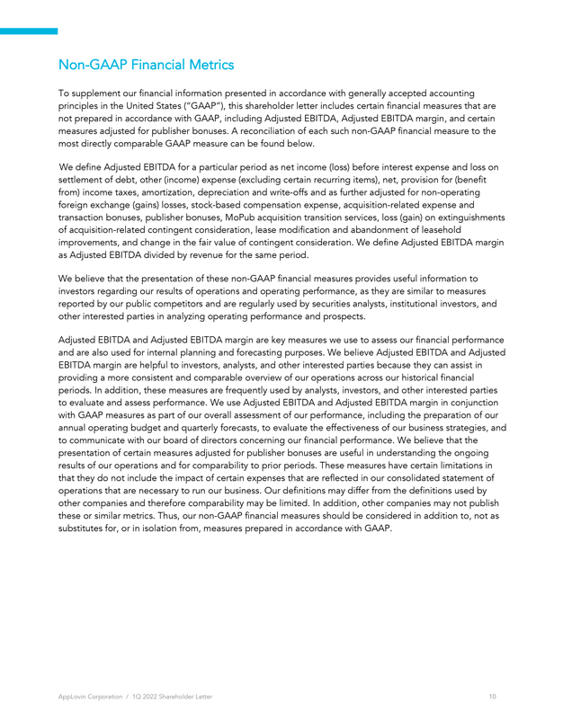
 </P> <P STYLE="font-family:Times New Roman; font-size:0.5pt"><FONT COLOR="#FFFFFF"><FONT STYLE="white-space:nowrap">Non-GAAP</FONT> Financial Metrics To supplement our financial information presented in accordance with
generally accepted accounting principles in the United States (&#147;GAAP&#148;), this shareholder letter includes certain financial measures that are not prepared in accordance with GAAP, including Adjusted EBITDA, Adjusted EBITDA margin, and
certain measures adjusted for publisher bonuses. A reconciliation of each such <FONT STYLE="white-space:nowrap">non-GAAP</FONT> financial measure to the most directly comparable GAAP measure can be found below. We define Adjusted EBITDA for a
particular period as net income (loss) before interest expense and loss on settlement of debt, other (income) expense (excluding certain recurring items), net, provision for (benefit from) income taxes, amortization, depreciation and write-offs and
as further adjusted for <FONT STYLE="white-space:nowrap">non-operating</FONT> foreign exchange (gains) losses, stock-based compensation expense, acquisition-related expense and transaction bonuses, publisher bonuses, MoPub acquisition transition
services, loss (gain) on extinguishments of acquisition-related contingent consideration, lease modification and abandonment of leasehold improvements, and change in the fair value of contingent consideration. We define Adjusted EBITDA margin as
Adjusted EBITDA divided by revenue for the same period. We believe that the presentation of these <FONT STYLE="white-space:nowrap">non-GAAP</FONT> financial measures provides useful information to investors regarding our results of operations and
operating performance, as they are similar to measures reported by our public competitors and are regularly used by securities analysts, institutional investors, and other interested parties in analyzing operating performance and prospects. Adjusted
EBITDA and Adjusted EBITDA margin are key measures we use to assess our financial performance and are also used for internal planning and forecasting purposes. We believe Adjusted EBITDA and Adjusted EBITDA margin are helpful to investors, analysts,
and other interested parties because they can assist in providing a more consistent and comparable overview of our operations across our historical financial periods. In addition, these measures are frequently used by analysts, investors, and other
interested parties to evaluate and assess performance. We use Adjusted EBITDA and Adjusted EBITDA margin in conjunction with GAAP measures as part of our overall assessment of our performance, including the preparation of our annual operating budget
and quarterly forecasts, to evaluate the effectiveness of our business strategies, and to communicate with our board of directors concerning our financial performance. We believe that the presentation of certain measures adjusted for publisher
bonuses are useful in understanding the ongoing results of our operations and for comparability to prior periods. These measures have certain limitations in that they do not include the impact of certain expenses that are reflected in our
consolidated statement of operations that are necessary to run our business. Our definitions may differ from the definitions used by other companies and therefore comparability may be limited. In addition, other companies may not publish these or
similar metrics. Thus, our <FONT STYLE="white-space:nowrap">non-GAAP</FONT> financial measures should be considered in addition to, not as substitutes for, or in isolation from, measures prepared in accordance with GAAP. AppLovin Corporation / 1Q
2022 Shareholder Letter 11 </FONT></P>
</DIV></Center>


<p style="margin-top:1em; margin-bottom:0em; page-break-before:always">
<HR SIZE="3" style="COLOR:#999999" WIDTH="100%" ALIGN="CENTER">

<Center><DIV STYLE="width:8.5in" align="left">
 <P STYLE="margin-top:0pt;margin-bottom:0pt" ALIGN="center">


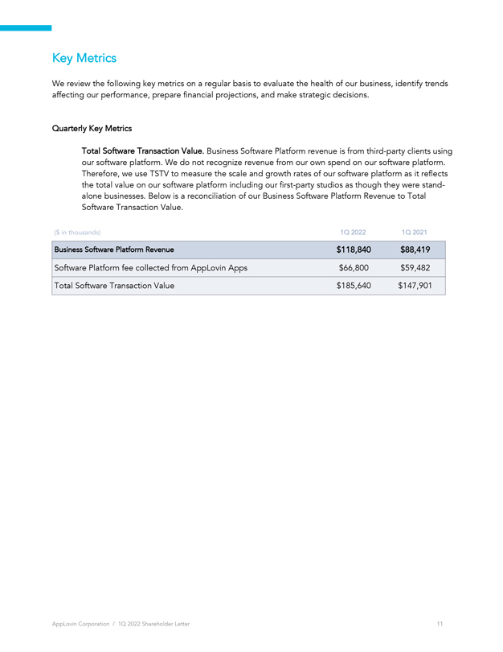
 </P> <P STYLE="font-family:Times New Roman; font-size:0.5pt"><FONT COLOR="#FFFFFF">Key Metrics We review the following key metrics on a regular basis to evaluate the health of our business, identify trends affecting our
performance, prepare financial projections, and make strategic decisions. Quarterly Key Metrics Total Software Transaction Value. Business Software Platform revenue is from third-party clients using our software platform. We do not recognize revenue
from our own spend on our software platform. Therefore, we use TSTV to measure the scale and growth rates of our software platform as it reflects the total value on our software platform including our first-party studios as though they were
stand-alone businesses. Below is a reconciliation of our Business Software Platform Revenue to Total Software Transaction Value. ($ in thousands) 1Q 2022 1Q 2021 Business Software Platform Revenue $118,840 $88,419 Software Platform fee collected
from AppLovin Apps $66,800 $59,482 Total Software Transaction Value $185,640 $147,901 AppLovin Corporation / 1Q 2022 Shareholder Letter </FONT></P>
</DIV></Center>


<p style="margin-top:1em; margin-bottom:0em; page-break-before:always">
<HR SIZE="3" style="COLOR:#999999" WIDTH="100%" ALIGN="CENTER">

<Center><DIV STYLE="width:8.5in" align="left">
 <P STYLE="margin-top:0pt;margin-bottom:0pt" ALIGN="center">


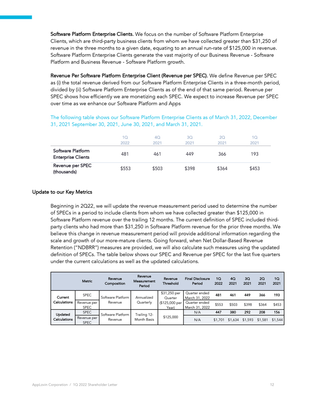
 </P> <P STYLE="font-family:Times New Roman; font-size:0.5pt"><FONT COLOR="#FFFFFF">Software Platform Enterprise Clients. We focus on the number of Software Platform Enterprise Clients, which are third-party business
clients from whom we have collected greater than $31,250 of revenue in the three months to a given date, equating to an annual run-rate of $125,000 in revenue. Software Platform Enterprise Clients generate the vast majority of our Business Revenue -
Software Platform and Business Revenue - Software Platform growth. Revenue Per Software Platform Enterprise Client (Revenue per SPEC). We define Revenue per SPEC as (i) the total revenue derived from our Software Platform Enterprise Clients in a
three-month period, divided by (ii) Software Platform Enterprise Clients as of the end of that same period. Revenue per SPEC shows how efficiently we are monetizing each SPEC. We expect to increase Revenue per SPEC over time as we enhance our
Software Platform and Apps The following table shows our Software Platform Enterprise Clients as of March 31, 2022, December 31, 2021 September 30, 2021, June 30, 2021, and March 31, 2021. 1Q 4Q 3Q 2Q 1Q 2022 2021 2021 2021 2021 Software Platform
Enterprise Clients 481 461 449 366 193 Revenue per SPEC $553 $503 $398 $364 $453 (thousands) Update to our Key Metrics Beginning in 2Q22, we will update the revenue measurement period used to determine the number of SPECs in a period to include
clients from whom we have collected greater than $125,000 in Software Platform revenue over the trailing 12 months. The current definition of SPEC included third-party clients who had more than $31,250 in Software Platform revenue for the prior
three months. We believe this change in revenue measurement period will provide additional information regarding the scale and growth of our more-mature clients. Going forward, when Net Dollar-Based Revenue Retention (&#147;NDBRR&#148;) measures are
provided, we will also calculate such measures using the updated definition of SPECs. The table below shows our SPEC and Revenue per SPEC for the last five quarters under the current calculations as well as the updated calculations. Revenue Revenue
Revenue Final Disclosure 1Q 4Q 3Q 2Q 1Q Metric Measurement Composition Threshold Period 2022 2021 2021 2021 2021 Period $31,250 per Quarter ended SPEC 481 461 449 366 193 Current Software Platform Annualized Quarter March 31, 2022 Calculations
Revenue per Revenue Quarterly ($125,000 per Quarter ended $553 $503 $398 $364 $453 SPEC Year) March 31, 2022 SPEC N/A 447 380 292 208 156 Updated Software Platform Trailing 12- Revenue per $125,000 Calculations Revenue Month Basis N/A $1,701 $1,634
$1,593 $1,581 $1,544 SPEC </FONT></P>
</DIV></Center>


<p style="margin-top:1em; margin-bottom:0em; page-break-before:always">
<HR SIZE="3" style="COLOR:#999999" WIDTH="100%" ALIGN="CENTER">

<Center><DIV STYLE="width:8.5in" align="left">
 <P STYLE="margin-top:0pt;margin-bottom:0pt" ALIGN="center">


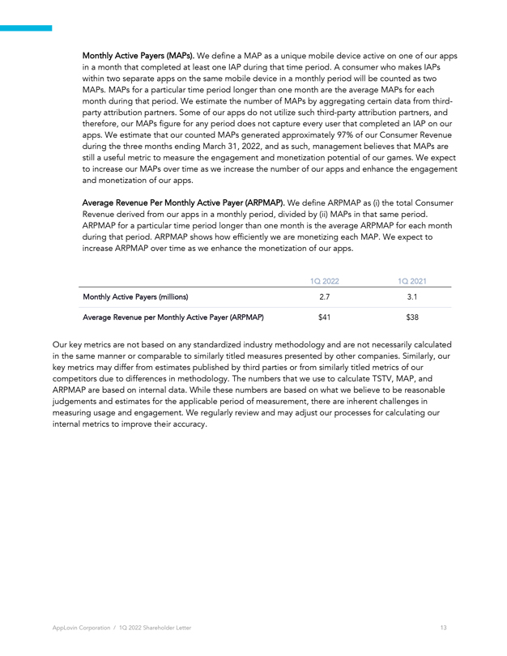
 </P> <P STYLE="font-family:Times New Roman; font-size:0.5pt"><FONT COLOR="#FFFFFF">Monthly Active Payers (MAPs). We define a MAP as a unique mobile device active on one of our apps in a month that completed at least one
IAP during that time period. A consumer who makes IAPs within two separate apps on the same mobile device in a monthly period will be counted as two MAPs. MAPs for a particular time period longer than one month are the average MAPs for each month
during that period. We estimate the number of MAPs by aggregating certain data from third-party attribution partners. Some of our apps do not utilize such third-party attribution partners, and therefore, our MAPs figure for any period does not
capture every user that completed an IAP on our apps. We estimate that our counted MAPs generated approximately 97% of our Consumer Revenue during the three months ending March&nbsp;31, 2022, and as such, management believes that MAPs are still a
useful metric to measure the engagement and monetization potential of our games. We expect to increase our MAPs over time as we increase the number of our apps and enhance the engagement and monetization of our apps. Average Revenue Per Monthly
Active Payer (ARPMAP). We define ARPMAP as (i)&nbsp;the total Consumer Revenue derived from our apps in a monthly period, divided by (ii)&nbsp;MAPs in that same period. ARPMAP for a particular time period longer than one month is the average ARPMAP
for each month during that period. ARPMAP shows how efficiently we are monetizing each MAP. We expect to increase ARPMAP over time as we enhance the monetization of our apps. 1Q 20221Q 2021Monthly Active Payers (millions)2.73.1Average Revenue per
Monthly Active Payer (ARPMAP)$41$38Our key metrics are not based on any standardized industry methodology and are not necessarily calculated in the same manner or comparable to similarly titled measures presented by other companies. Similarly, our
key metrics may differ from estimates published by third parties or from similarly titled metrics of our competitors due to differences in methodology. The numbers that we use to calculate TSTV, MAP, and ARPMAP are based on internal data. While
these numbers are based on what we believe to be reasonable judgements and estimates for the applicable period of measurement, there are inherent challenges in measuring usage and engagement. We regularly review and may adjust our processes for
calculating our internal metrics to improve their accuracy. AppLovin Corporation / 1Q 2022 Shareholder Letter 14 </FONT></P>
</DIV></Center>


<p style="margin-top:1em; margin-bottom:0em; page-break-before:always">
<HR SIZE="3" style="COLOR:#999999" WIDTH="100%" ALIGN="CENTER">

<Center><DIV STYLE="width:8.5in" align="left">
 <P STYLE="margin-top:0pt;margin-bottom:0pt" ALIGN="center">


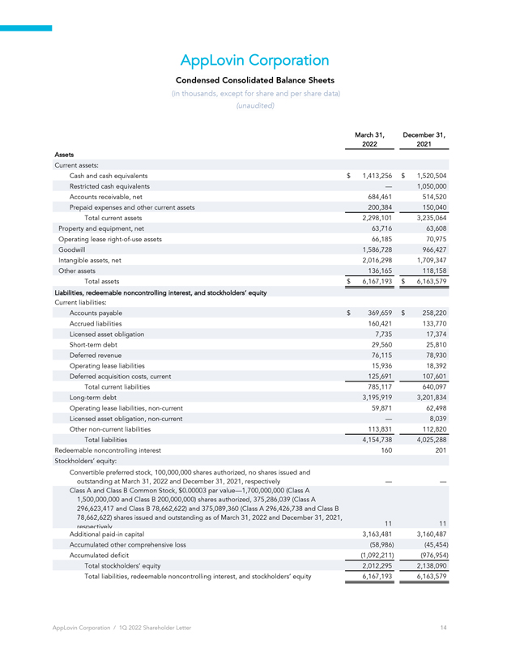
 </P> <P STYLE="font-family:Times New Roman; font-size:0.5pt"><FONT COLOR="#FFFFFF">AppLovin CorporationCondensed Consolidated Balance Sheets(in thousands, except for share and per share data)(unaudited)March 31,December
31,20222021AssetsCurrent assets:Cash and cash equivalents$ 1,413,256$ 1,520,504Restricted cash equivalents&#151;1,050,000Accounts receivable, net684,461514,520Prepaid expenses and other current assets200,384150,040Total current
assets2,298,1013,235,064Property and equipment, net63,71663,608Operating lease <FONT STYLE="white-space:nowrap"><FONT STYLE="white-space:nowrap">right-of-use</FONT></FONT> assets66,18570,975Goodwill1,586,728966,427Intangible assets,
net2,016,2981,709,347Other assets136,165118,158Total assets$ 6,167,193$ 6,163,579Liabilities, redeemable noncontrolling interest, and stockholders&#146; equityCurrent liabilities:Accounts payable$ 369,659$ 258,220Accrued
liabilities160,421133,770Licensed asset obligation7,73517,374Short-term debt29,56025,810Deferred revenue76,11578,930Operating lease liabilities15,93618,392Deferred acquisition costs, current125,691107,601Total current
liabilities785,117640,097Long-term debt3,195,9193,201,834Operating lease liabilities, <FONT STYLE="white-space:nowrap">non-current59,87162,498Licensed</FONT> asset obligation, <FONT STYLE="white-space:nowrap">non-current&#151;8,039Other</FONT> <FONT
STYLE="white-space:nowrap">non-current</FONT> liabilities113,831112,820Total liabilities4,154,7384,025,288Redeemable noncontrolling interest160201Stockholders&#146; equity:Convertible preferred stock, 100,000,000 shares authorized, no shares issued
andoutstanding at March&nbsp;31, 2022 and December&nbsp;31, 2021, respectively&#151;&#151;Class&nbsp;A and Class&nbsp;B Common Stock, $0.00003 par value&#151;1,700,000,000 (Class A1,500,000,000 and Class&nbsp;B 200,000,000) shares authorized,
375,286,039 (Class A296,623,417 and Class&nbsp;B 78,662,622) and 375,089,360 (Class A 296,426,738 and Class&nbsp;B78,662,622) shares issued and outstanding as of March&nbsp;31, 2022 and December&nbsp;31, 2021,respectively1111Additional <FONT
STYLE="white-space:nowrap">paid-in</FONT> capital3,163,4813,160,487Accumulated other comprehensive loss(58,986)(45,454)Accumulated deficit(1,092,211)(976,954)Total stockholders&#146; equity2,012,2952,138,090Total liabilities, redeemable
noncontrolling interest, and stockholders&#146; equity6,167,1936,163,579AppLovin Corporation / 1Q 2022 Shareholder Letter1415 </FONT></P>
</DIV></Center>


<p style="margin-top:1em; margin-bottom:0em; page-break-before:always">
<HR SIZE="3" style="COLOR:#999999" WIDTH="100%" ALIGN="CENTER">

<Center><DIV STYLE="width:8.5in" align="left">
 <P STYLE="margin-top:0pt;margin-bottom:0pt" ALIGN="center">


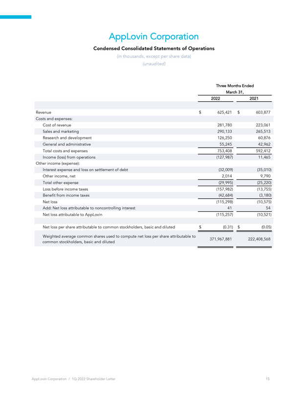
 </P> <P STYLE="font-family:Times New Roman; font-size:0.5pt"><FONT COLOR="#FFFFFF">AppLovin CorporationCondensed Consolidated Statements of Operations(in thousands, except per share data)(unaudited)Three Months
EndedMarch 31,20222021Revenue$625,421 $603,877Costs and expenses:Cost of revenue281,780223,061Sales and marketing290,133265,513Research and development126,25060,876General and administrative55,24542,962Total costs and expenses753,408592,412Income
(loss) from operations(127,987)11,465Other income (expense):Interest expense and loss on settlement of debt(32,009)(35,010)Other income, net2,0149,790Total other expense(29,995)(25,220)Loss before income taxes(157,982)(13,755)Benefit from income
taxes(42,684)(3,180)Net loss(115,298)(10,575)Add: Net loss attributable to noncontrolling interest4154Net loss attributable to AppLovin(115,257)(10,521)Net loss per share attributable to common stockholders, basic and diluted$(0.31) $(0.05)Weighted
average common shares used to compute net loss per share attributable to371,967,881222,408,568common stockholders, basic and dilutedAppLovin Corporation / 1Q 2022 Shareholder Letter 16 </FONT></P>
</DIV></Center>


<p style="margin-top:1em; margin-bottom:0em; page-break-before:always">
<HR SIZE="3" style="COLOR:#999999" WIDTH="100%" ALIGN="CENTER">

<Center><DIV STYLE="width:8.5in" align="left">
 <P STYLE="margin-top:0pt;margin-bottom:0pt" ALIGN="center">


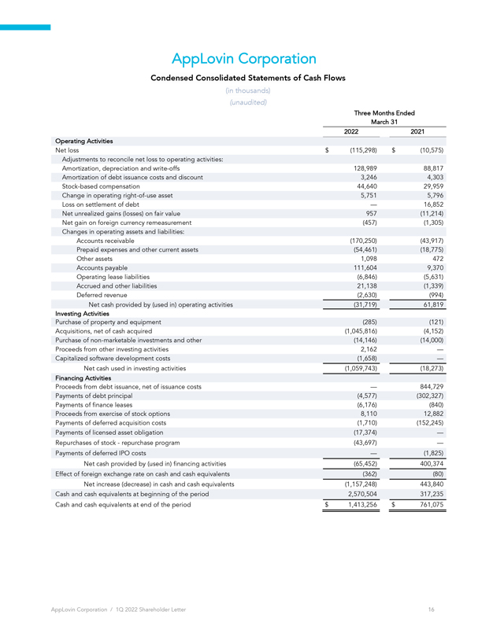
 </P> <P STYLE="font-family:Times New Roman; font-size:0.5pt"><FONT COLOR="#FFFFFF">AppLovin CorporationCondensed Consolidated Statements of Cash Flows(in thousands)(unaudited)Three Months EndedMarch 3120222021Operating
ActivitiesNet loss$(115,298)$(10,575)Adjustments to reconcile net loss to operating activities:Amortization, depreciation and write-offs128,98988,817Amortization of debt issuance costs and discount3,2464,303Stock-based compensation44,64029,959Change
in operating <FONT STYLE="white-space:nowrap"><FONT STYLE="white-space:nowrap">right-of-use</FONT></FONT> asset5,7515,796Loss on settlement of debt&#151;16,852Net unrealized gains (losses) on fair value957(11,214)Net gain on foreign currency
remeasurement(457)(1,305)Changes in operating assets and liabilities:Accounts receivable(170,250)(43,917)Prepaid expenses and other current assets(54,461)(18,775)Other assets1,098472Accounts payable111,6049,370Operating lease
liabilities(6,846)(5,631)Accrued and other liabilities21,138(1,339)Deferred revenue(2,630)(994)Net cash provided by (used in) operating activities(31,719)61,819Investing ActivitiesPurchase of property and equipment(285)(121)Acquisitions, net of cash
acquired(1,045,816)(4,152)Purchase of <FONT STYLE="white-space:nowrap">non-marketable</FONT> investments and other(14,146)(14,000)Proceeds from other investing activities2,162&#151;Capitalized software development costs(1,658)&#151;Net cash used in
investing activities(1,059,743)(18,273)Financing ActivitiesProceeds from debt issuance, net of issuance costs&#151;844,729Payments of debt principal(4,577)(302,327)Payments of finance leases(6,176)(840)Proceeds from exercise of stock
options8,11012,882Payments of deferred acquisition costs(1,710)(152,245)Payments of licensed asset obligation(17,374)&#151;Repurchases of stock&#151;repurchase program(43,697)&#151;Payments of deferred IPO costs&#151;(1,825)Net cash provided by
(used in) financing activities(65,452)400,374Effect of foreign exchange rate on cash and cash equivalents(362)(80)Net increase (decrease) in cash and cash equivalents(1,157,248)443,840Cash and cash equivalents at beginning of the
period2,570,504317,235Cash and cash equivalents at end of the period$1,413,256$761,075AppLovin Corporation / 1Q 2022 Shareholder Letter1617 </FONT></P>
</DIV></Center>


<p style="margin-top:1em; margin-bottom:0em; page-break-before:always">
<HR SIZE="3" style="COLOR:#999999" WIDTH="100%" ALIGN="CENTER">

<Center><DIV STYLE="width:8.5in" align="left">
 <P STYLE="margin-top:0pt;margin-bottom:0pt" ALIGN="center">


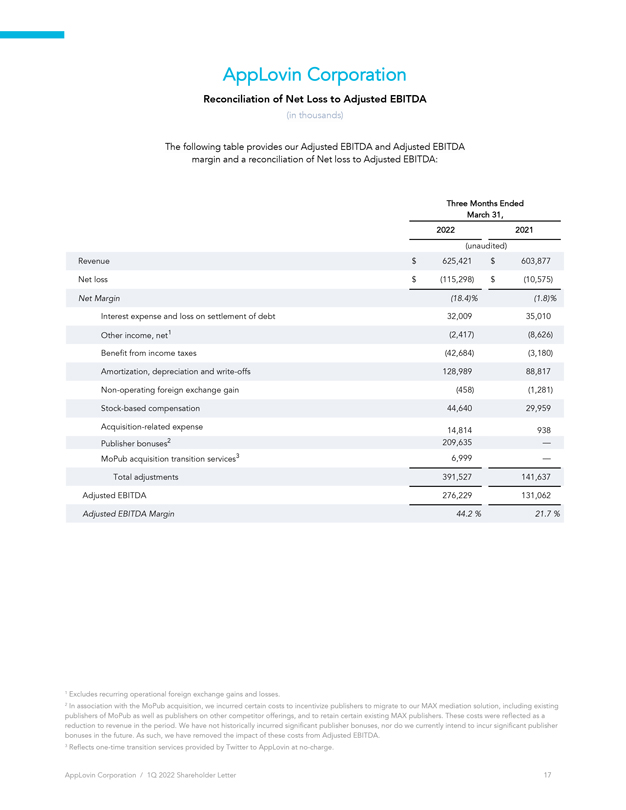
 </P> <P STYLE="font-family:Times New Roman; font-size:0.5pt"><FONT COLOR="#FFFFFF">AppLovin CorporationReconciliation of Net Loss to Adjusted EBITDA(in thousands)The following table provides our Adjusted EBITDA and
Adjusted EBITDAmargin and a reconciliation of Net loss to Adjusted EBITDA:Three Months EndedMarch 31,20222021(unaudited) Revenue$625,421$603,877Net loss $(115,298) $(10,575)Net Margin(18.4)%(1.8)% Interest expense and loss on settlement of debt
32,00935,010 Other income, net1(2,417)(8,626)Benefit from income taxes(42,684)(3,180)Amortization, depreciation and write-offs128,98988,817Non-operating foreign exchange gain(458)(1,281) Stock-based compensation44,64029,959Acquisition-related
expense14,814938Publisher bonuses2209,635&#151;MoPub acquisition transition services36,999&#151;Total adjustments391,527141,637Adjusted EBITDA276,229131,062Adjusted EBITDA Margin44.2 %21.7 %1 Excludes recurring operational foreign exchange gains and
losses. 2 In association with the MoPub acquisition, we incurred certain costs to incentivize publishers to migrate to our MAX mediation solution, including existing publishers of MoPub as well as publishers on other competitor offerings, and to
retain certain existing MAX publishers. These costs were reflected as a reduction to revenue in the period. We have not historically incurred significant publisher bonuses, nor do we currently intend to incur significant publisher bonuses in the
future. As such, we have removed the impact of these costs from Adjusted EBITDA. 3 Reflects <FONT STYLE="white-space:nowrap">one-time</FONT> transition services provided by Twitter to AppLovin at <FONT STYLE="white-space:nowrap">no-charge.</FONT>
AppLovin Corporation / 1Q 2022 Shareholder Letter&nbsp;&nbsp;&nbsp;&nbsp;&nbsp;&nbsp;&nbsp;&nbsp;&nbsp;&nbsp;&nbsp;&nbsp;&nbsp;&nbsp;&nbsp;&nbsp; 17 18 </FONT></P>
</DIV></Center>


<p style="margin-top:1em; margin-bottom:0em; page-break-before:always">
<HR SIZE="3" style="COLOR:#999999" WIDTH="100%" ALIGN="CENTER">

<Center><DIV STYLE="width:8.5in" align="left">
 <P STYLE="margin-top:0pt;margin-bottom:0pt" ALIGN="center">


 </P>
</DIV></Center>

</BODY></HTML>
</TEXT>
</DOCUMENT>
